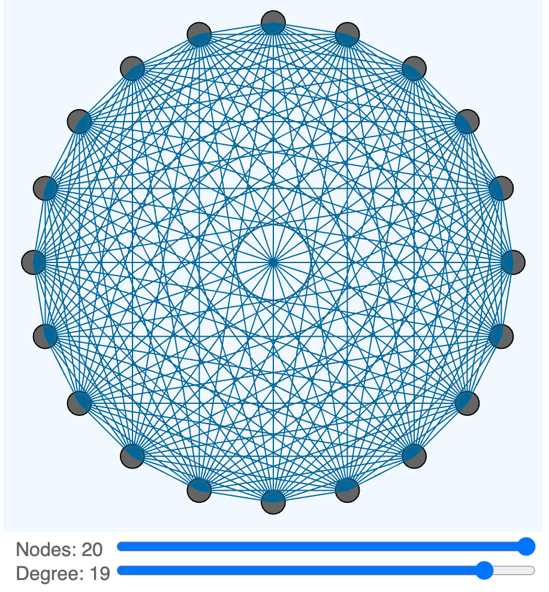

Degree V2

Prompt
Create a p5.js sketch on a 500x600 canvas.
This sketch demonstrates how the degree of a network graph changes based on the number of connections between vertices of the graph.
The drawing region is 500x500.
The control region is the bottom 100 below the drawing region.
Set a global variable of canvasWidth to be 500.
Set a global variable of drawingHeight to be 500.
Set a global variable of controlRegionHeight to be 100.
Set a global variable of leftMargin to be 100.
Use the leftMargin to place the label and values of the sliders in the control region.
At the beginning of each draw, draw the background of the drawing region in aliceblue.
Draw the background of the control region white.
Create a function that draws N small circles around the edge of a large circle.
N is a parameter of the function.
Create another function that draws the network between the edges circles with the degree from the degreeSlider.
The small circles are spaced evenly around the edge of the large circle.
The small circles have a maximum radius of 20.
The large circle has a radius of 230.
Add a slider called nSlider that changes the number of small circles on the edge of the large circle.
The range of nSlider is from 4 to 20 with a default value of 10.
Add a second slider called degreeSlider that changes the number of edges between each small circle and other small circles.
The degreeSlider ranges from 1 to N.
Draw lines from each small circle to others based on the degree slider.
Draw the label and values in the leftMargin of the controls.
Make the size of the sliders be the canvasWidth less the leftMargin.
Sample Code
1 2 3 4 5 6 7 8 9 10 11 12 13 14 15 16 17 18 19 20 21 22 23 24 25 26 27 28 29 30 31 32 33 34 35 36 37 38 39 40 41 42 43 44 45 46 47 48 49 50 51 52 53 54 55 56 57 58 59 60 61 62 63 64 65 66 67 68 69 70 71 72 73 74 75 76 77 78 79 | |
Note
There is a bug in the code that tries to make sure that the degree is always less than the number of nodes.